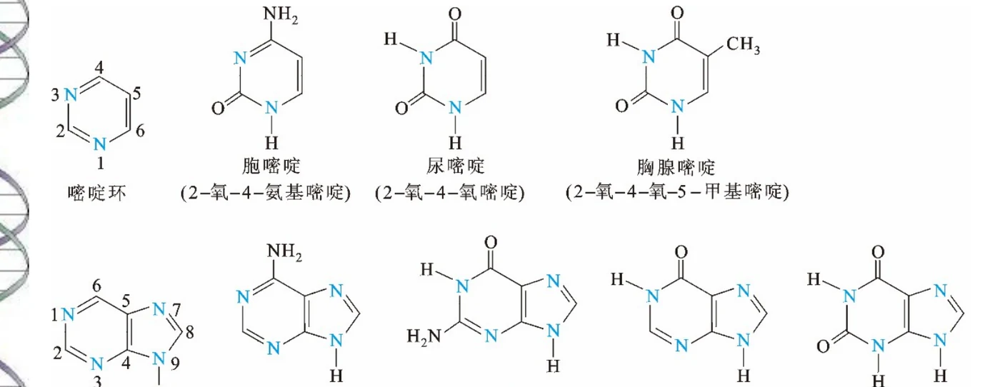
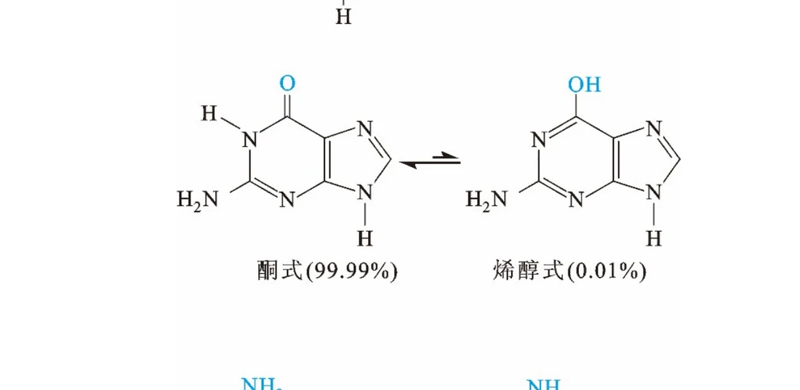
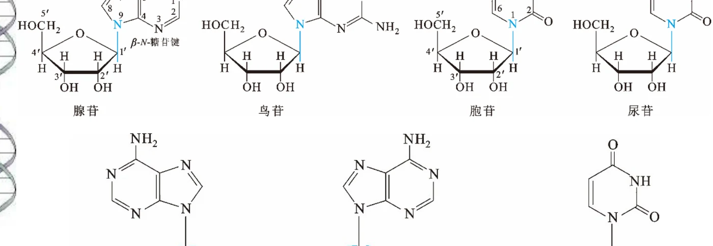
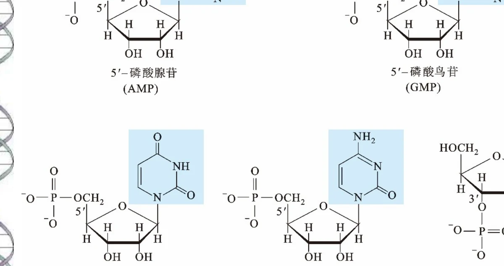
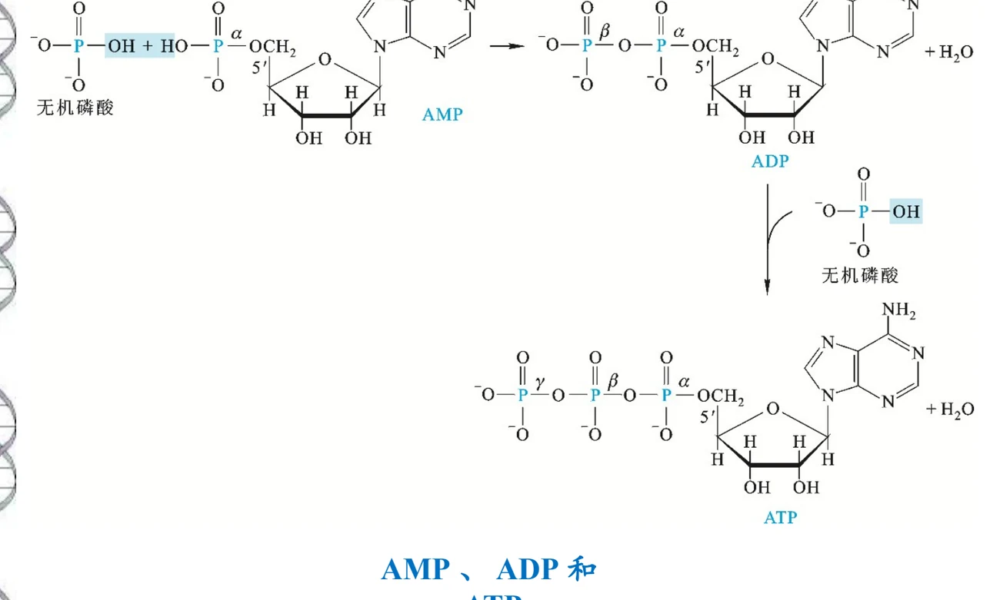
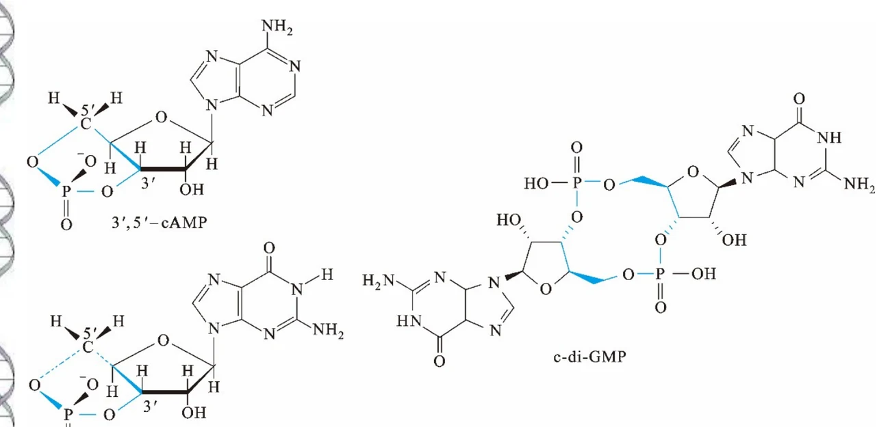

碱基是芳香杂环，几乎不溶于水。这正是为什么碱基要被包在双螺旋内部、靠疏水堆叠稳定的原因。
CHAPTER 06 · NUCLEOTIDES
核苷酸
碱基、核苷、核苷酸是三级递进的概念，本章先把这三层讲清，再展开核苷酸在能量、信号、辅酶和代谢调控中的多重身份——它不是只为造核酸而存在的原料。
碱基互变异构核苷顺反构象环核苷酸七大功能
1. 三级概念：碱基 → 核苷 → 核苷酸
这一章的全部内容都挂在一条主线上。先把三个概念的名词关系固定下来，后面的化学细节才有位置可放。
碱基 Base+ 戊糖核苷 Nucleoside+ 磷酸核苷酸 Nucleotide缩合核酸
| 层次 | 组成 | 连接方式 | 英文 |
|---|---|---|---|
| 碱基 | 含氮杂环（嘧啶环或嘌呤环） | — | base |
| 核苷 | 碱基 + 戊糖 | β-N-糖苷键 | nucleoside |
| 核苷酸 | 核苷 + 磷酸 | 磷酸酯键（连在糖的羟基上） | nucleotide |
一个容易记混的点
“核苷”英文是 nucleoside，结尾是 -side；“核苷酸”是 nucleotide，结尾是 -tide。多出来的那个 t 就是 phosphate（磷酸）的标记。靠这一点可以避免在考试中把两个词写反。
这两个反应在化学上都是脱水缩合：碱基与糖之间脱去一分子水形成糖苷键，磷酸与糖之间脱去一分子水形成磷酸酯键。反过来，核酸在酸或碱的作用下也可以逐步水解回核苷酸、核苷直至碱基和磷酸——这也是核酸降解实验的化学基础。理解这个可逆性，就不需要单独记忆“核酸由什么组成”这句话了。
还有一点需要提前澄清：核苷酸并不是只在核酸里才出现。游离的核苷酸在细胞里大量存在，承担着完全不同的工作，这就是第 6 节要展开的“七重身份”。把“核酸的结构单元”当成核苷酸的唯一角色，是学习本章时最容易形成的错误印象。
2. 碱基：五种主要碱基的编号与结构
核酸中的碱基都是含氮的芳香杂环。嘧啶类有胞嘧啶（C）、尿嘧啶（U）、胸腺嘧啶（T）；嘌呤类有腺嘌呤（A）和鸟嘌呤（G）。其中 C 同时存在于 RNA 和 DNA，U 只存在于 RNA，T 只存在于 DNA，A 和 G 两者都有。

图源：第6章《核苷酸》PPT，第2页。注意嘧啶环编号 1~6、嘌呤环编号 1~9，糖的取代位置分别是嘧啶的 N1 和嘌呤的 N9。
编号规则必须掌握，因为它决定了碱基和糖连接的位置，也是理解氢键配对方向和互变异构的基础：
| 骨架 | 原子编号 | 糖的连接位点 | 成员 |
|---|---|---|---|
| 嘧啶环 | 1 ~ 6（两个 N 为 1 和 3） | N1 | 胞嘧啶 C、尿嘧啶 U、胸腺嘧啶 T |
| 嘌呤环 | 1 ~ 9（四个 N 为 1、3、7、9） | N9 | 腺嘌呤 A、鸟嘌呤 G |
糖环上的原子则加一撇（prime）区分，写作 C1′、C2′、C3′、C4′、C5′。这一约定在下面讲核苷和磷酸酯位置时反复要用。
碱基的三个共同性质：

图源：第6章《核苷酸》PPT，第4页。课件给出的平衡比例很说明问题：酮式占 99.99%，烯醇式仅 0.01%；氨基式占 99.99%，亚氨基式仅 0.01%。
互变异构比例如此极端，原因在于酮式和氨基式更稳定。这个看似枯燥的数字有一个重要推论：正因为平衡几乎完全偏在一侧，碱基的配对才具有确定性。如果烯醇式占比可观，A 就有可能和 G 配对，遗传信息的忠实传递就无从谈起。第 7 章讲 DNA 双螺旋的稳定性时会回到这一点。
不过这里有一个容易被忽略的推论：正因为互变异构体的比例极低而不是零，它们才恰好构成自发突变的一个内源来源。在复制的那一瞬间，如果模板上的碱基恰好处于稀有的烯醇式，聚合酶就可能认错而掺入错误的碱基。比例只有万分之一，但基因组每复制一次涉及的碱基数以十亿计，这些稀有构象就会被捕捉到。所以“99.99%”这个数字同时说明了两个相反的结论：它保证了配对的确定性，又给突变留下了极小的概率。生物学的精度与变异性往往就藏在这种数量级里。
2.1 碱基的溶解性与紫外吸收
碱基是芳香杂环，几乎不溶于水。这个性质看起来只是溶解度问题，实际上决定了核酸的高级结构：正因为碱基不亲水，它们才会被埋在双螺旋的内部，通过疏水相互作用相互堆叠；而亲水的糖-磷酸骨架自然被排到外侧接触水。可以说“碱基避水”是双螺旋形成的热力学驱动力。第 7 章讲碱基堆积时会用上这个结论。
另一方面，共轭杂环使碱基在 260 nm 有强吸收，这是核酸定量和杂交检测的基础。1 OD₂₆₀ 的双链 DNA 约相当于 50 μg/mL；纯 DNA 的 A260/A280 约 1.8、纯 RNA 约 2.0，比值偏低通常说明样品中残留蛋白质。一个更精彩的应用是增色效应：双螺旋解链后碱基不再堆积，紫外吸收会明显增强，因此测定 A260 随温度的变化曲线可以直接得到核酸的熔解温度（Tm），而 Tm 又随 GC 含量升高——这样就把一个光学测量变成了测定碱基组成的实验手段。
3. 核苷：β-糖苷键与顺反两种构象
核苷由戊糖和碱基通过 β-N-糖苷键连接而成。D-核糖（存在于 RNA）与 2-脱氧-D-核糖（存在于 DNA）的差别只在 2′ 位——一个是羟基，一个是氢。这个看似微小的差别对核酸的高级结构和稳定性影响极大，第 7 章会详细展开。

图源：第6章《核苷酸》PPT，第5页。下方标出了腺苷和尿苷的顺式（syn）与反式（anti）两种糖苷键构象。
糖苷键的旋转受到阻碍，因此核苷存在两种稳定的构象异构体：
| 构象 | 定义 | 谁容易采取 |
|---|---|---|
| 反式anti | 碱基平面远离糖环 | 嘧啶核苷通常采取反式，因为顺式会与 O2 和 C5′ 之间产生空间位阻 |
| 顺式syn | 碱基平面转回到糖环上方 | 游离的嘌呤核苷（尤其鸟苷）容易采取顺式 |
这里有一个很重要的限定条件：游离核苷的构象偏好不能直接搬到核酸链中。在 DNA 或 RNA 双螺旋里，嘌呤核苷也主要是反式构象。原因是链中的构象还受到碱基堆叠和骨架走向的约束，单体状态下的空间位阻考虑退居次要地位。理解“单体偏好”与“聚合物偏好”可能不同，是读懂构象讨论的关键。
4. 核苷酸：磷酸连在哪里，为什么是 5′
核苷酸是核苷的磷酸酯。磷酸可以连在糖环的不同羟基上，自然界主要使用 5′-核苷酸，即磷酸连在 C5′ 上。这个选择贯穿整个核酸化学。

图源：第6章《核苷酸》PPT，第8页。课件把 AMP、GMP、UMP、CMP 与 3′-AMP 并列，正说明了磷酸位置不同就是不同的化合物。
按磷酸基团数量，5′-核苷酸依次是 NMP（一磷酸）、NDP（二磷酸）、NTP（三磷酸）。它们之间通过磷酸酐键连接，从糖一侧向外依次记为 α、β、γ。
“为什么自然界主要用 5′-核苷酸”这个问题值得想一想。答案与聚合反应的化学方向有关：核酸链的延伸是把新核苷酸的 5′-磷酸加到已有链的 3′-OH 上，因此参与聚合的原料必须是5′ 位带磷酸的核苷三磷酸。如果原料的磷酸连在 3′ 位，这套聚合机制就无法工作。所以 5′-核苷酸占主导不是随机的选择，而是由复制和转录的化学机制决定的。

图源：第6章《核苷酸》PPT，第9页。AMP 的 5′-磷酸与无机磷酸缩合形成磷酸酐键，得到 ADP；ADP 再与一分子无机磷酸缩合得到 ATP。α、β、γ 从糖侧向外编号。
为什么 ATP 是高能化合物
两个磷酰基之间的磷酸酐键水解时释放较多自由能。课件特意标出了“磷酸酐”这个结构名称，因为高能性来自结构，不是来自某个神秘的标记。同理，ATP 之所以能作为通用能量货币，是因为它的水解产物 ADP 和 Pi 都很稳定、可以反复再生，而中间那个磷酸酐键恰好落在“既不太稳定也不太惰性”的合适区间。
5. 环核苷酸：3′,5′-环化与第二信使
磷酸同时与糖环上的两个羟基成酯，就形成环核苷酸。最典型的是 cAMP 和 cGMP，都是 3′,5′-环化。

图源：第6章《核苷酸》PPT，第10页。除了经典的 3′,5′-环化形式，还给出了环二鸟苷酸（c-di-GMP）。
环核苷酸的意义在于它们是信号分子而非结构单元。cAMP 和 cGMP 作为第二信使，把细胞外的信号（激素、神经递质）转成细胞内的响应。这一点与它们作为核酸单体的“本职工作”完全不同，是核苷酸功能多样性的最直接体现。课件提到核苷酸还能通过 G 蛋白对 GMP 的调节参与信号转导，说明这条通路不止一个层面。
6. 核苷酸的七重身份
把核苷酸只当作“核酸的原料”是最大的误解。课件列出了至少七个方面的生物学功能，它们分布在看似毫不相干的领域里。
| 功能 | 具体体现 | 代表分子 |
|---|---|---|
| 1 核酸的结构单元 | DNA 和 RNA 的基本组成单位 | dNMP、NMP |
| 2 能量货币 | 多数情况用 ATP；糖原合成用 UTP，磷脂合成用 CTP，蛋白质合成用 GTP | ATP、UTP、CTP、GTP |
| 3 信号转导 | cAMP、cGMP 作为第二信使；核苷酸通过 G 蛋白调控 | cAMP、cGMP |
| 4 辅酶与辅基的组分 | 辅酶 Ⅰ 和辅酶 Ⅱ 中都含 ADP | NAD⁺、NADP⁺ |
| 5 活性中间产物的前体 | SAM 作为甲基供体；UDP-糖参与糖基转移 | SAM、UDP-Glc |
| 6 代谢调节的别构效应物 | ATP 抑制磷酸果糖激酶-1；AMP 激活糖原磷酸化酶 | ATP、AMP |
| 7 基因表达调控 | ppGpp、pppGpp 参与原核生物的严紧反应 | ppGpp |
第 2 条值得单独说明：ATP 是“通用”能量货币，但并不是“唯一”的。糖原合成和磷脂合成分别使用 UTP 和 CTP，蛋白质合成中某些步骤使用 GTP。这些分工不是随意安排的——用不同的核苷三磷酸可以把不同的代谢过程在能量层面区分开，便于独立调控。如果所有过程都直接消耗 ATP，调控的精度会大打折扣。
第 6 条的对称性
ATP 抑制磷酸果糖激酶-1、AMP 激活糖原磷酸化酶，这两个例子体现同一种逻辑：ATP/AMP 的比值是细胞的“能量电量表”。ATP 充足时抑制消耗能量的糖酵解，AMP 积累时（意味着 ATP 不足）激活分解糖原的途径。用同一个分子的两种形式（ATP 与 AMP）传递相反信号，是代谢调控中非常经济的设计。
6.1 辅酶中的核苷酸：一个容易被忽略的观察
第 4 条说“辅酶 Ⅰ 和辅酶 Ⅱ 中都含 ADP”，这句话值得停下来想一下。NAD⁺ 由两个核苷酸通过磷酸酐键连接而成，其中一个含腺嘌呤；FAD 含 ADP 部分；辅酶 A 也含 ADP；甚至 ATP 本身、SAM 和许多辅因子都含有腺苷结构。如果把所有这些分子放在一起看，会发现腺苷几乎是细胞内通用“接头”。
对这一现象的一种解释是：含腺苷的辅酶更容易被同一套蛋白识别，或者腺苷段能作为“把手”方便酶抓住辅酶。不管具体机制如何，这个观察本身就说明了一个更普遍的道理——核苷酸在细胞里扮演的角色远超“造核酸的砖块”，它更像是连接能量代谢、信号转导和酶催化的通用模块。理解了这一点，再看那七条功能就不再是彼此无关的清单，而是同一个分子被反复复用的不同侧面。
6.2 从功能表到考试回答
面对“核苷酸有哪些生物学功能”这类问题，直接罗列七条容易显得零散。更稳妥的组织方式是按分子身份归类：作为结构单元参与核酸（第 1 条）；作为能量载体参与代谢（第 2、6 条，ATP/UTP/CTP/GTP 与 ATP/AMP 比值调控）；作为信号分子参与信息传递（第 3 条，cAMP/cGMP）；作为分子工具参与酶催化与合成（第 4、5 条，辅酶与 SAM、UDP-糖）；作为调控因子参与基因表达（第 7 条，ppGpp）。这样归类后，每条都能挂到一个化学结构特征上，回答时也更容易举例。
主动回忆
不看表格说出核苷酸的七个功能，并各举一个分子。再回答：为什么细胞不统一使用 ATP，而要分出 UTP、CTP、GTP？
本次测验的概念校正：“RNA常用U、DNA常用T”是主要组成规律，修饰核苷等存在例外。ATP水解释放的净自由能来自完整反应的自由能差，不能理解为断键本身放能。
章节测验
15道单选、3道多选、2道判断、2道填空。按5道基础、10道中等、4道较难、3道拓展递进；交卷后查看答案与解析。